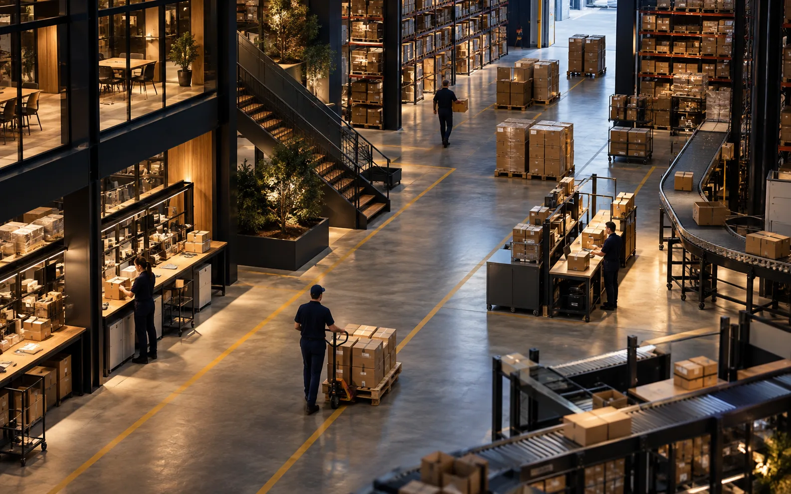
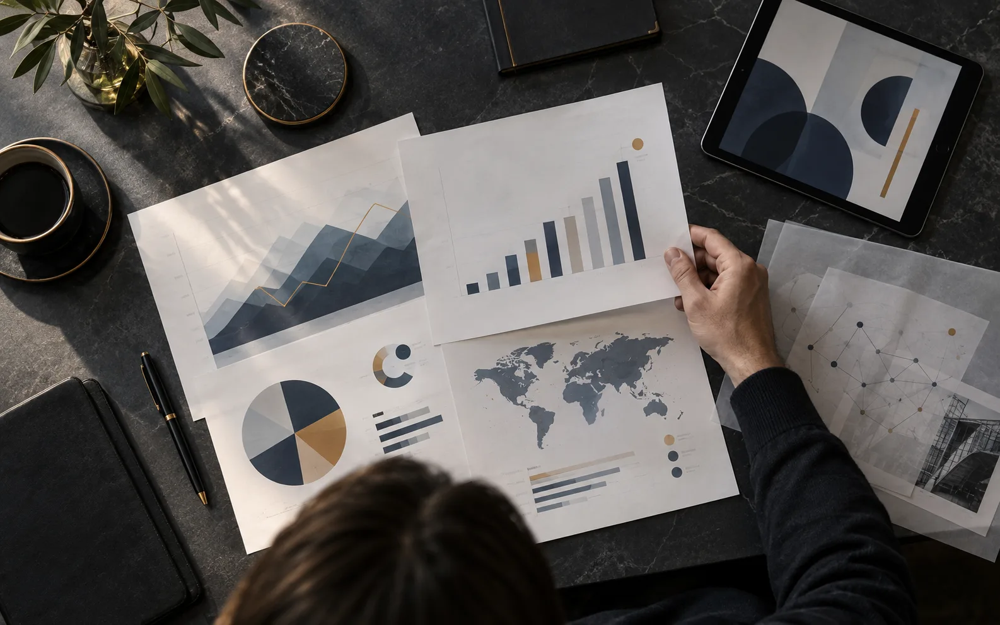
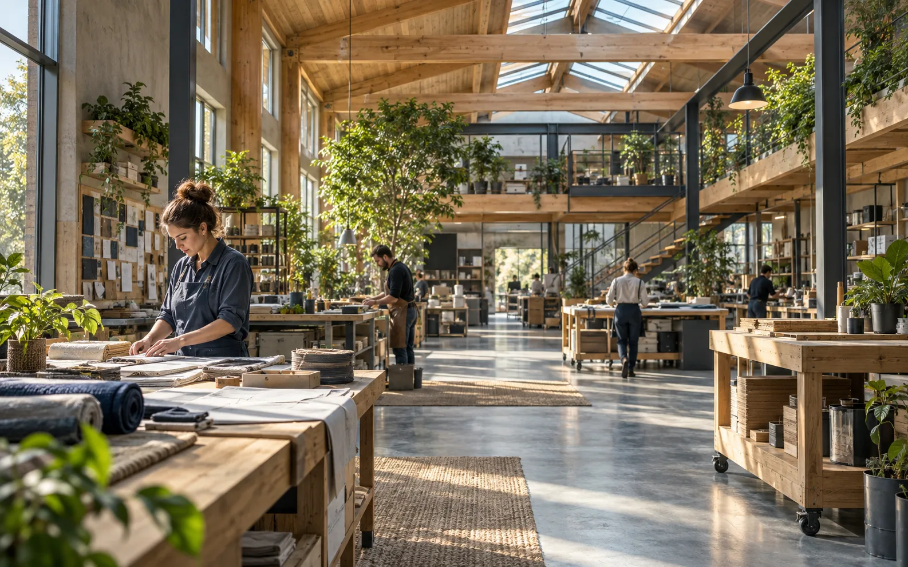

Belirsizlikte net kararlar almak mümkün mü?
Değişen koşullarda yönünüzü kaybetmeden ilerlemek için stratejinizi nasıl canlı tutabilirsiniz?
İş dünyasının değişen sorularına birlikte bakıyor; deneyim, veri ve merakı aynı sayfada buluşturuyoruz.
6 yazı gösteriliyor
Değişen koşullarda yönünüzü kaybetmeden ilerlemek için stratejinizi nasıl canlı tutabilirsiniz?
Yeni araçlar ancak doğru problem, doğru ekip ve açık bir yol haritasıyla gerçek değer yaratır.

Süreçleri sadeleştirmek ekiplerin hızını artırırken kaliteyi de nasıl güçlendirir?
Belirsiz zamanlarda ekiplerin güven ve hareket alanı bulması için liderler neyi farklı yapmalı?

Daha fazla gösterge yerine daha iyi sorularla karar süreçlerini nasıl sadeleştirebilirsiniz?

Uzun vadeli değer yaratmayı günlük kararların gerçek bir parçasına dönüştürmek için bir başlangıç rehberi.
Farklı bir kelime deneyin veya tüm kategorileri görüntüleyin.